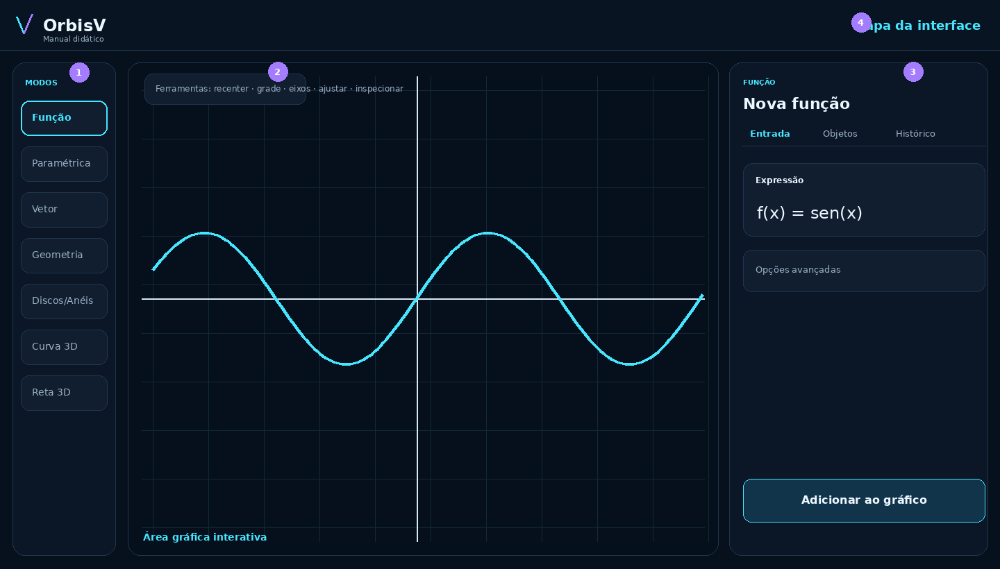
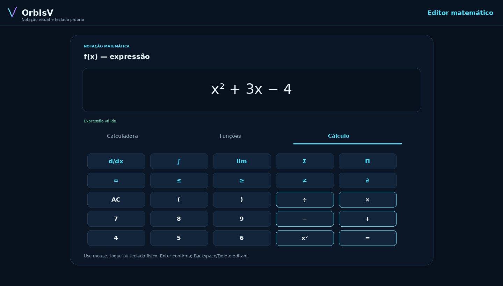
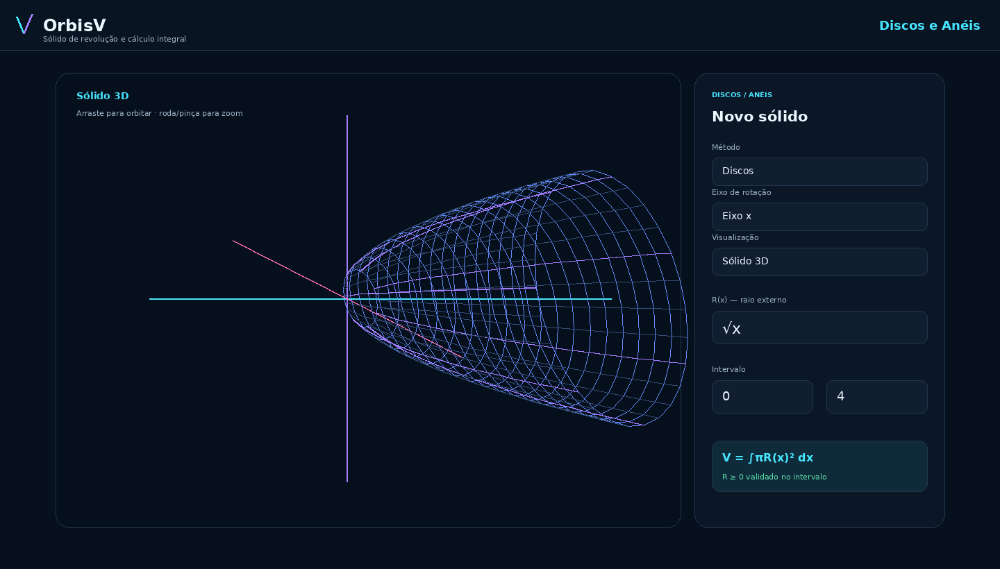
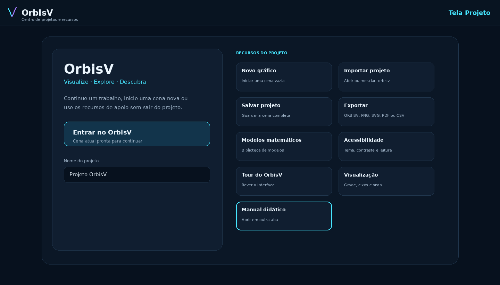
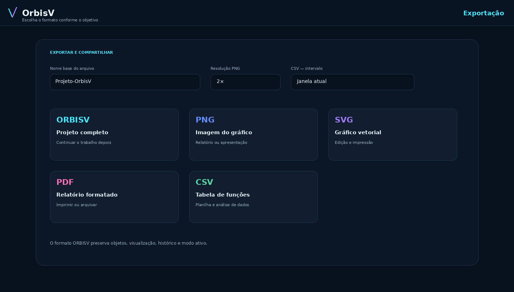

No desktop, fica à esquerda. No celular, os modos principais ficam na barra inferior e os demais em Mais.
MANUAL INTERATIVO
Aprenda o OrbisV enquanto usa o programa
Este manual foi pensado para permanecer aberto em uma aba separada. Assim, você pode ler uma orientação aqui, voltar ao OrbisV e verificar imediatamente o que acabou de aprender.
Como usar este manual
- Leia uma seção.
- Use o botão Abrir no OrbisV quando ele aparecer.
- O programa volta ao modo correspondente sem fechar este manual.
- Faça o exemplo e retorne a esta aba para continuar.
Conhecendo a interface
O OrbisV é organizado em quatro áreas principais: modos matemáticos, gráfico, painel de entrada/objetos/histórico e barra de ações.

Mostra funções, construções geométricas, vetores e cenas 3D. É também a área de pan, zoom e inspeção.
Possui as abas Entrada, Objetos e Histórico. No celular, esse painel funciona como bottom sheet.
Reúne desfazer/refazer, Projeto, Manual, Acessibilidade, Visualização e, no desktop, tela cheia.
Área gráfica
A visualização é interativa e foi desenhada para exploração contínua, sem apagar os objetos já construídos.
Navegação em 2D
- Arrastar
- Move o plano sem alterar os objetos.
- Roda do mouse / pinça
- Aproxima ou afasta o gráfico.
- Recentrar
- Retorna a visualização a uma escala inicial útil.
- Ajustar à tela
- Enquadra os objetos visíveis.
- Inspecionar
- Exibe uma linha vertical de leitura e valores das funções visíveis.
Snap matemático
O snap funciona como um “ímã” do cursor. Por padrão, o modo Automático prioriza pontos notáveis e aproxima coordenadas úteis da grade ou de valores inteiros.
Ordem de prioridadePonto notável → inteiro → grade
Em Visualização, você pode escolher Automático, Grade, Inteiros, Pontos notáveis ou Desativado.
Valores dos pontos: os rótulos são adaptativos. Em zoom aberto, o programa reduz a quantidade de etiquetas para evitar poluição visual; ao aproximar, mais valores aparecem.
Editor matemático e teclado OrbisV
Os campos matemáticos são editados por uma tela própria para manter a escrita próxima da notação convencional.

AbaPara que serveExemplos
CalculadoraNúmeros, variáveis, operações, potências, raízes e parênteses.
x² + 3x − 4FunçõesFunções trigonométricas, logarítmicas e outras funções matemáticas suportadas.
sen(x), ln(x), √xCálculoDerivada, integral definida, limite, somatório, produtório, infinito e comparações.
d/dx, ∫, lim, Σ, ΠTeclado físico
Dentro do editor, as teclas de cursor movem o ponto de edição. Backspace apaga à esquerda, Delete apaga à direita, Home/End levam ao início/fim e Enter confirma.
Importante: o editor mostra notação matemática visual, mas o motor mantém uma representação interna estruturada para avaliar a expressão.
Modo Função
Use este modo para representar funções reais de uma variável na forma y = f(x).
Exemplo
f(x) = x² − 4Domínio opcional
−5 ≤ x ≤ 5Passo a passo
- Escolha Função. O formulário apresenta o campo f(x).
- Edite a expressão. Toque ou clique no campo para abrir o editor matemático.
- Defina o domínio, se necessário. Em Opções avançadas, informe início e fim do domínio.
- Adicione ao gráfico. O objeto recebe uma cor automaticamente.
- Edite o objeto. Na aba Objetos, você pode alterar expressão, domínio e cor.
Análise de função existente
Ao editar uma função já criada, o painel de análise usa a janela atual para informar quantidade de raízes detectadas, interseção com o eixo y e extremos locais. O botão Pontos notáveis coloca esses pontos em destaque no gráfico.
Modo Paramétrica
Uma curva paramétrica é construída a partir de duas equações que dependem do mesmo parâmetro t.
Equaçõesx = x(t)
y = y(t)
y = y(t)
Exemplo de circunferênciax(t)=cos(t)
y(t)=sen(t)0 ≤ t ≤ 2π
y(t)=sen(t)0 ≤ t ≤ 2π
O intervalo de t determina quanto da curva será desenhado. Se o intervalo for curto, apenas uma parte aparece; se for maior, podem surgir várias voltas.
Modo Vetor
O vetor é definido por um ponto de origem e um ponto de extremidade.
Componentesv = (x₂−x₁, y₂−y₁)
Módulo|v| = √[(Δx)²+(Δy)²]
Enquanto você preenche as coordenadas, o OrbisV apresenta módulo e direção angular. O desenho mostra a origem, o segmento e a ponta da seta.
Modo Geometria
O mesmo modo reúne várias construções geométricas do plano.
P=(x,y)Informe diretamente as duas coordenadas.
ax + by + c = 0Os coeficientes a e b não podem ser simultaneamente zero.
(x−h)²+(y−k)²=r²Informe centro e raio positivo.
(x−h)²/a²+(y−k)²/b²=1Informe centro e semieixos positivos.
V₁,V₂,...,VₙAdicione ou remova vértices e forneça as coordenadas de cada um.
Discos e Anéis
Este modo representa sólidos de revolução e calcula volumes por integração.

AnelA(u) = π[R(u)² − r(u)²]
DiscoA(u) = πR(u)²
VolumeV = ∫ A(u) du
Como preencher
- Escolha Anéis ou Discos.
- Escolha o eixo de rotação: x ou y.
- Escolha Sólido de revolução 3D ou Seções e perfil 2D.
- Informe o raio externo R. Para anéis, informe também o raio interno r.
- Defina o intervalo de integração.
- Confira a interpretação matemática e a validação antes de adicionar.
Regra matemática verificada pelo programa: no intervalo informado, o OrbisV exige numericamente R(u) ≥ r(u) ≥ 0.
Na visualização 3D, arraste para orbitar, use roda/pinça para aproximar e Shift + arraste para deslocar o alvo da câmera.
Curva 3D
Representa uma função vetorial espacial por três coordenadas dependentes do parâmetro t.
Vetor posiçãor(t) = (x(t), y(t), z(t))
Exemplo clássico: x(t)=cos(t), y(t)=sen(t), z(t)=t/4. Com um intervalo suficientemente grande, o resultado é uma hélice.
A câmera 3D usa arraste para órbita, roda/pinça para zoom e Shift + arraste para deslocamento.
Reta 3D
Uma reta no espaço pode ser definida de duas maneiras.
Informe um ponto inicial P₀ e um vetor diretor v=(a,b,c).
r(t)=P₀+t·vInforme A e B. O programa usa B−A como direção da reta.
r(t)=A+t(B−A)Objetos, edição e histórico
Cada construção adicionada vira um objeto independente da cena.
Aba Objetos
Reabre o formulário original com os dados do objeto. Aqui também aparece a escolha de cor.
Retira o objeto apenas da visualização, sem apagá-lo.
Evita mudanças acidentais em um objeto.
Cria uma cópia e atribui uma nova cor para facilitar comparação.
Move o objeto para cima ou para baixo na ordem da cena.
Permite ocultar, duplicar ou excluir um grupo de uma vez.
Cores
Novos objetos do mesmo modo recebem cores sucessivamente diferentes. Ao editar qualquer objeto, você pode escolher uma cor da paleta ou uma cor personalizada.
Histórico e Undo/Redo
O histórico registra as ações da cena. Os botões Desfazer e Refazer atuam nas alterações do projeto, enquanto o editor matemático possui seu próprio histórico interno.
Modelos matemáticos
A biblioteca fornece construções pré-prontas para acelerar estudos e demonstrações.
O OrbisV possui 47 modelos organizados por categoria. Você pode pesquisar por nome, filtrar a categoria e usar um modelo. O modelo preenche o formulário do modo correspondente, permitindo revisar os dados antes de adicionar ao gráfico.
Usar um modelo não elimina o processo de aprendizagem: o formulário permanece visível para que você identifique cada parâmetro da construção.
Projetos e salvamento automático
A tela Projeto é a central de entrada e saída do OrbisV.

O programa mantém um salvamento automático local da sessão no navegador. Isso ajuda a continuar um trabalho após recarregar a página, mas não substitui o arquivo de projeto quando você precisa transportar ou arquivar o trabalho.
Recomendação: para guardar um trabalho importante fora do navegador, use Salvar projeto e mantenha o arquivo
.orbisv.Importação
A Central de Importação aceita projetos OrbisV e arquivos JSON compatíveis.
- Abra Projeto → Importar projeto.
- Selecione ou arraste um arquivo
.orbisvou.json. - Confira a pré-visualização: nome, versão, quantidade de objetos, data e tamanho.
- Escolha Substituir cena atual ou Mesclar com a cena.
- Confirme a importação.
Carrega objetos, visualização, histórico, modo ativo e nome do projeto importado.
Mantém a cena atual e adiciona os objetos do arquivo, evitando conflito de identificadores.
O arquivo é validado antes de alterar a cena. O limite atual de importação é 8 MB.
Exportação
A Central de Exportação permite escolher o formato conforme o objetivo do trabalho.

FormatoUse quando...Conteúdo
ORBISVVocê quer continuar o trabalho depois.Projeto completo: objetos, visualização, histórico e modo ativo.
PNGVocê precisa inserir o gráfico em trabalho, slide ou relatório.Imagem em resolução atual, 2× ou 3×.
SVGVocê precisa de gráfico vetorial em cena 2D.Objetos 2D vetoriais; cenas 3D podem ser incorporadas como imagem.
PDFVocê quer um relatório pronto para impressão.Gráfico e resumo dos objetos visíveis.
CSVVocê quer analisar valores de funções em planilha.Somente funções visíveis, separador ;, vírgula decimal e BOM para Excel.
Exportação CSV
O intervalo pode ser a janela atual ou um intervalo personalizado. No intervalo personalizado, informe x inicial, x final e passo. Para proteção contra arquivos excessivamente grandes, o programa limita a saída a 20.001 linhas.
Acessibilidade e preferências visuais
O OrbisV separa preferências de acessibilidade das preferências matemáticas de visualização.
Tema claro/escuro, alto contraste, tamanho do texto, espaçamento entre letras, reduzir animações e leitura simplificada.
Simulações de protanopia, deuteranopia, tritanopia e acromatopsia, com traços e marcadores para não depender apenas de cor.
Descrição acessível, navegação por teclado e opção de usar o teclado do dispositivo no editor.
Atalhos de teclado
Atalhos reduzem a quantidade de cliques durante uma exploração matemática.
Ctrl + ZDesfazer ação da cena
Ctrl + YRefazer ação da cena
Ctrl + EnterAdicionar/salvar o formulário atual
EscFechar menus e janelas transitórias
SetasNo editor: mover cursor; no 3D: orbitar câmera quando a navegação por teclado está ativa
+ / −No 3D: aproximar ou afastar a câmera
Shift + arrastarDeslocar o alvo da câmera em cenas 3D
Roteiros práticos
Use estes exercícios para aprender o programa executando tarefas curtas.
Roteiro A
Parábola e raízes
- Digite
x² − 4em f(x). - Adicione ao gráfico.
- Abra a aba Objetos e edite a função.
- Na análise, use Pontos notáveis.
- Observe as raízes em x = −2 e x = 2 e a interseção com y.
Roteiro B
Vetor 3-4-5
- Use origem (0,0).
- Use extremidade (3,4).
- Confira o módulo exibido pelo programa.
- Adicione o vetor e use o snap para inspecionar pontos próximos.
Roteiro C
Círculo com centro deslocado
- Escolha Círculo.
- Centro: (2,1).
- Raio: 3.
- Adicione e use Ajustar à tela.
- Edite o objeto e troque sua cor.
Roteiro D
Volume por discos
- Escolha Discos e eixo x.
- Use R(x)=√x.
- Use intervalo 0 a 4.
- Observe a interpretação da área da seção.
- Adicione em 3D e gire o sólido.
Roteiro E
Hélice no espaço
- x(t)=cos(t)
- y(t)=sen(t)
- z(t)=t/4
- Intervalo: 0 a 4π.
- Adicione e explore a câmera 3D.
Solução de problemas
Consulte estas verificações antes de refazer uma construção.
O objeto foi adicionado, mas não aparece no gráfico.
Use Ajustar à tela. Depois confirme na aba Objetos se ele está visível. Em funções, verifique também se o domínio informado inclui a região que você espera ver.
A expressão não é aceita.
Abra o editor e confira parênteses, denominadores, potências e argumentos das funções. Use o teclado OrbisV para evitar caracteres incompatíveis.
Discos/Anéis não permite adicionar o sólido.
Verifique se o intervalo é válido, se os raios são reais no intervalo e se a condição R ≥ r ≥ 0 é atendida.
O CSV não foi exportado.
É necessário ter pelo menos uma função visível. Se usar intervalo personalizado, confira x inicial, x final e passo. Se exceder 20.001 linhas, aumente o passo.
O arquivo não importa.
O arquivo deve ser .orbisv ou .json compatível, conter JSON válido e ter no máximo 8 MB.
O PDF abriu a janela de impressão.
Esse é o fluxo esperado. Escolha Salvar como PDF no diálogo de impressão do navegador.
O manual ou PDF não abre outra aba.
O navegador pode estar bloqueando pop-ups. Permita janelas para o endereço em que o OrbisV está sendo executado.
Glossário rápido
Alguns termos usados em diferentes partes do programa.
- Cena
- Conjunto de objetos que está sendo exibido no gráfico.
- Objeto
- Uma função, vetor, construção geométrica, sólido ou elemento 3D salvo na cena.
- Snap
- Atração do cursor para coordenadas ou pontos matematicamente relevantes.
- Pan
- Deslocamento da visualização sem alterar os objetos.
- Ponto notável
- Ponto destacado por uma propriedade matemática relevante, como raiz, extremo ou interseção.
- Domínio
- Conjunto de valores de entrada em que uma função é considerada.
- Parâmetro
- Variável auxiliar usada para percorrer uma curva, como t em curvas paramétricas.
- Raio externo/interno
- Distâncias ao eixo de rotação usadas no método dos anéis.
- Autosave
- Salvamento automático local da sessão no navegador.